×
NOT A HOTEL · Dining Options
三日餐食選項
7/29 晚餐 Dinner 英文版 ↗

Sekiboku 爐端會席晚餐
沉浸於傳統爐端料理的技藝，菜餚帶有淡淡炭火香氣。享用暖心鍋物與陶鍋炊煮的時令炊飯，體現北輕井澤獨有的原始飲食文化。如需包廂或吧檯席，請透過禮賓聊天洽詢。由於座位有限，鍋物料理將採輪替供應方式，敬請見諒。
¥21,780／人
赤城牛涮涮鍋（自助式）
於房內自助享用赤城牛涮涮鍋套餐（不含烹調服務）。
¥14,520／人
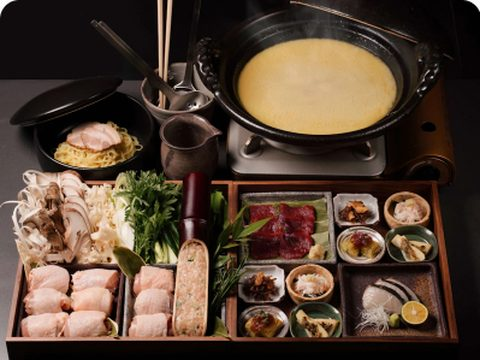
雞白湯水炊鍋（自助式）
於房內自助享用水炊鍋套餐（不含烹調服務）。
¥12,100／人
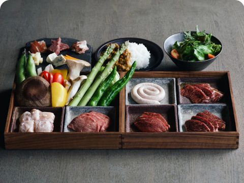
BBQ 鴨肉燒烤（自助式）
於房內自助享用鍋物套餐，使用新鮮鴨肉與在地蔬菜（不含烹調服務）。
¥12,100／人
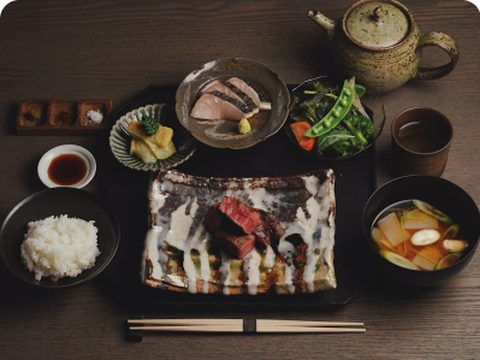
Sekiboku 炭烤赤城牛菲力晚餐
內含：陶鍋炊飯・味噌湯・炭烤赤城牛菲力牛排・兩款時令小缽・新鮮沙拉・甜點。＊食材可能依季節供應狀況而有所調整。
¥9,680／人
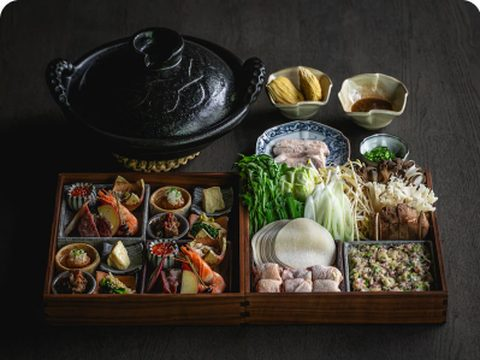
高原捲心菜手捲鍋
享用以高原捲心菜製作的餃子鍋物，這道特別菜單還能體驗親手「包捲」的樂趣。
¥9,680／人
7/30 早餐 Breakfast 英文版 ↗
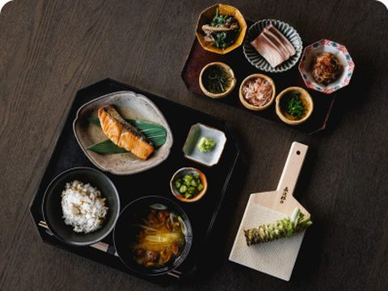
Sekiboku 和朝食
我們在餐廳「Sekiboku」提供傳統日式和風早餐。
¥4,840／人
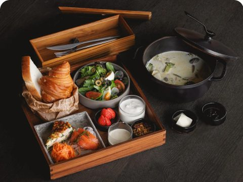
歐陸式早餐（自助・前晚送達）
我們為您準備西式早餐組，於房內享用（不含烹調服務）。前一晚送達房內的早餐組包含：可頌與吐司、特製蛤蜊巧達湯（加熱即可享用）、高原蔬菜沙拉（即可食用）、優格與自製穀麥。在動手準備、享用現做早餐的樂趣中展開美好的一天。早餐組將於前一晚 17:00–20:00 送達房內冰箱。若您不在房內，將徵得同意後代為放入冰箱。如有指定送達時間需求，請於當日 17:00 前告知。
¥3,025／人
7/30 晚餐 Dinner 英文版 ↗

Kigi 柴火會席晚餐
在餐廳「Kigi」，我們呈現體現「火與水」理念的柴燒會席料理。使用純淨湧泉水培育食材，再以柴火原始的熱力調理，不拘泥於特定料理形式，展現食材最極致的風味，透過難忘的味覺旅程，感受水上町獨有的風土與文化。如需包廂或吧檯席，請透過禮賓聊天洽詢。由於座位有限，鍋物料理將採輪替供應方式，敬請見諒。
¥19,360／人
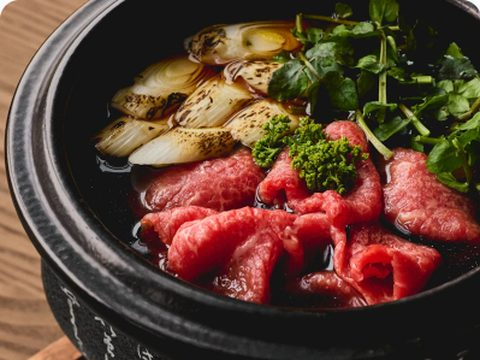
壽喜燒七輪炭烤御膳
館方人員將於您的房內備妥「水上七輪御膳」（炭火燒烤組），供您隨心享用。套餐內容包含朴葉燒赤城牛（朴葉上炭烤赤城牛）、酒蒸川魚、多款在地常菜、山藥泥與甜點，一同品味水上山川之惠。
¥14,520／人
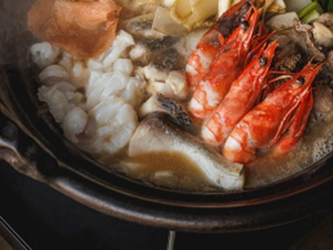
谷川岳相撲火鍋 Chanko Nabe
於房內自在享用自助式鍋物體驗（不含烹調服務）。這道特別料理使用佐渡優質海鮮與谷川岳新鮮山產食材，佐以風味絕佳的薑味噌湯底。
¥14,520／人
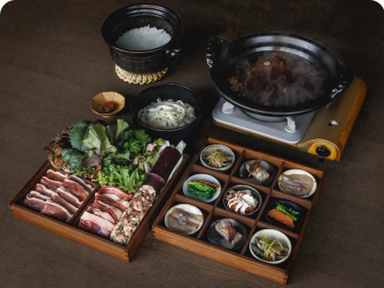
野味鍋 Jibie Nabe
於房內自助享用野味鍋套餐（不含烹調服務）。
¥14,520／人
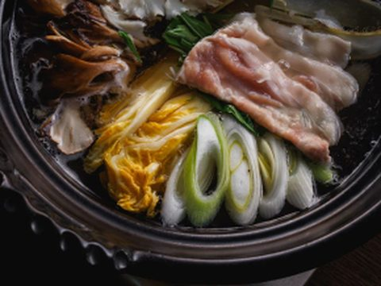
大和豚常夜鍋
於房內自助享用大和豚常夜鍋（火鍋料理）套餐（不含烹調服務）。
¥12,100／人
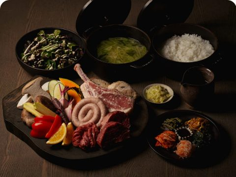
戶外 BBQ（Fire Pit）
我們將於 Fire Pit 戶外區域為您架設 BBQ 烤爐與食材（不含烹調服務）。如遇雨天，我們將於前一日下午與您聯繫，討論菜單調整或取消事宜。
¥12,100／人
7/31 晚餐 Dinner 英文版 ↗
＊因 NIGO LOUNGE 限定 NAH TOKYO 屋主使用，需做成活動讓 NAH 業務一起參加才能預約用餐。
NOT A HOTEL NIGO LOUNGE 主廚特別課程
由 NOT A HOTEL 行政主廚於 NIGO LOUNGE 呈現的頂級晚宴。我們專屬主廚將獻上一夜限定的頂級晚宴，菜單網羅海洋與山林的季節珍味，呈現和諧交織的極致饗宴。份量或個人喜好如有需求，歡迎隨時告知主廚。適合2至6位賓客，7位以上請事先與我們洽詢。範例菜單：海水風味海膽・馬鈴薯搭配 Oscietra 魚子醬・鮪魚炙燒佐鰹魚子風味・日本國產牛舌佐鯷魚檸檬與蔥花・伊勢龍蝦 Ajillo・雉雞清湯（味覺淨化）・宮崎縣熟成牛菲力佐黑胡椒醬汁・馬賽海鮮燉飯・甜點。
¥48,400／人
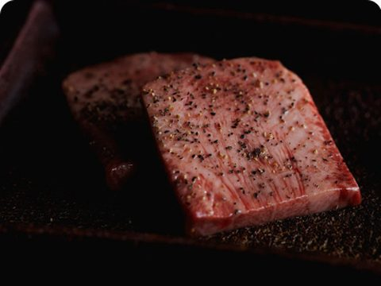
燒肉 Jumbo Premium 課程
此方案由東京名店「燒肉Jumbo」獨家監修的 NOT A HOTEL 專屬課程打造。由燒肉Jumbo社長難波裕光先生親自於現場為您服務，體驗僅此獨有的頂級燒肉饗宴。內含：綜合前菜・沙拉・Jumbo 頂級黑毛和牛・韓式辣牛肉湯・冷麵・牛肉飯・甜點。＊總消費金額低消為 ¥181,500，若未達此金額，我們將樂於為您推薦酒水或其他飲品補足差額。＊菜單內容為範例，可能依市場供應狀況與季節而有所調整。＊湯品可依需求更換為和牛雲吞湯，如有需要請透過聊天與我們聯繫。
¥60,500／人

燒肉 Jumbo 特選課程
此方案由東京名店「燒肉Jumbo」獨家監修的 NOT A HOTEL 專屬課程打造，以自助式風格、依個人步調悠閒享用。內含：綜合前菜・沙拉・Jumbo 頂級黑毛和牛・韓式辣牛肉湯・冷麵・甜點。＊總消費金額低消為 ¥181,500，若未達此金額，我們將樂於為您推薦酒水或其他飲品補足差額。
¥30,250／人
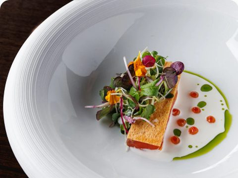
NOT A HOTEL Big Table 主廚晚宴（適合7位以上）
由 NOT A HOTEL 行政主廚於 Big Table 呈現的頂級晚宴。我們的行政主廚將在 Big Table 獻上一夜限定的特別菜單，網羅海洋與山林的頂級時令食材。此方案適合7位以上賓客，6位以下請透過聊天與我們洽詢。最大可容納 24 位賓客。範例菜單：海膽牛肉塔塔・魚子醬蟹肉沙拉・煙燻鮭魚繽紛沙拉・松茸雲吞清湯・帝王蟹螺旋麵阿拉比亞塔・香煎鮮魚佐奶油醬汁・菲力三明治・甜點。
¥36,300／人
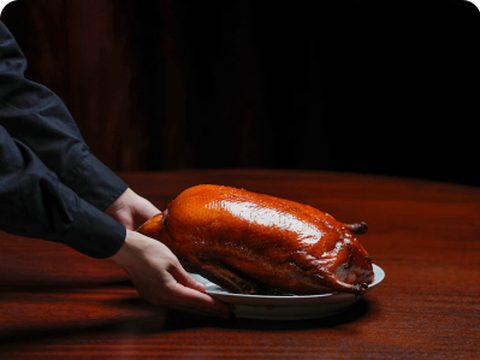
東泉閣晚宴課程（座席，6至12位）
於六本木「東泉閣」享用專屬包場的私人晚宴體驗，每日僅接待一組賓客。適合朋友聚會、團隊聚餐或家庭派對。晚宴課程自 ¥21,780 起。範例菜單：三款前菜・點心拼盤・紅燒魚翅・北京烤鴨（單品）・海鮮主菜・肉類主菜・麻婆豆腐・麵飯類・甜點。可依預算彈性升級菜色。適合 6 至 12 位賓客，詳情請洽詢我們的禮賓服務。
¥21,780／人
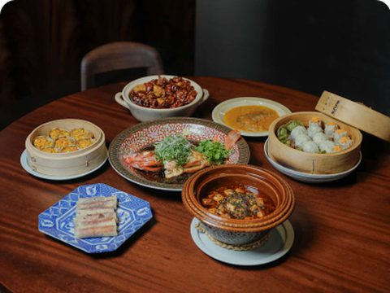
東泉閣立食派對方案（含3小時暢飲，13至50位）
於六本木「東泉閣」享用專屬包場的私人晚宴體驗，每日僅接待一組賓客，適合朋友聚會、團隊會議或家庭派對等各式聚餐與飲酒場合。大盤派對課程自 9,680 日圓起／全程3小時暢飲方案 6,050 日圓起。範例菜單：兩款前菜・兩款點心・三款主菜（如炸雞佐辣醬、辣味蝦、糖醋豬肉等）・麻婆豆腐・炒飯・甜點。酒精飲品：朝日啤酒、無糖啤酒、High Ball、檸檬沙瓦、紹興酒、大麥燒酎、琴通寧、卡西斯柳橙、蜜桃烏龍、氣泡酒、白酒、紅酒；無酒精飲品：無酒精啤酒、薑汁汽水、可樂、烏龍茶、綠茶、柳橙汁、蘋果汁。＊可依預算彈性升級。＊適合 13 至 50 位賓客。
¥16,335／人


![KITAKARUIZAWA BASE L 照片預留位置 1](data:image/svg+xml;charset=utf-8,%3Csvg%20xmlns%3D%22http%3A//www.w3.org/2000/svg%22%20width%3D%22400%22%20height%3D%22220%22%20viewBox%3D%220%200%20400%20220%22%3E%0A%3Crect%20width%3D%22400%22%20height%3D%22220%22%20fill%3D%22%23F3EBDB%22/%3E%0A%3Crect%20x%3D%220.5%22%20y%3D%220.5%22%20width%3D%22399%22%20height%3D%22219%22%20fill%3D%22none%22%20stroke%3D%22%23E4DCCE%22%20stroke-width%3D%221%22/%3E%0A%3Ccircle%20cx%3D%22200%22%20cy%3D%2295%22%20r%3D%2226%22%20fill%3D%22none%22%20stroke%3D%22%239C7A3C%22%20stroke-width%3D%222%22%20opacity%3D%22.55%22/%3E%0A%3Cpath%20d%3D%22M188%2095%20l8%20-9%208%209%20M196%2086%20v20%22%20stroke%3D%22%239C7A3C%22%20stroke-width%3D%222%22%20fill%3D%22none%22%20opacity%3D%22.55%22%20stroke-linecap%3D%22round%22%20stroke-linejoin%3D%22round%22/%3E%0A%3Ctext%20x%3D%22200%22%20y%3D%22150%22%20text-anchor%3D%22middle%22%20font-family%3D%22sans-serif%22%20font-size%3D%2212%22%20fill%3D%22%236E655A%22%20letter-spacing%3D%221%22%3E%E7%85%A7%E7%89%87%E6%BA%96%E5%82%99%E4%B8%AD%3C/text%3E%0A%3Ctext%20x%3D%22200%22%20y%3D%22172%22%20text-anchor%3D%22middle%22%20font-family%3D%22sans-serif%22%20font-size%3D%229%22%20fill%3D%22%236E655A%22%20opacity%3D%22.7%22%20letter-spacing%3D%221%22%3EKITAKARUIZAWA%20BASE%20L%3C/text%3E%0A%3C/svg%3E)
![Minakami TOJI 照片預留位置 1](data:image/svg+xml;charset=utf-8,%3Csvg%20xmlns%3D%22http%3A//www.w3.org/2000/svg%22%20width%3D%22400%22%20height%3D%22220%22%20viewBox%3D%220%200%20400%20220%22%3E%0A%3Crect%20width%3D%22400%22%20height%3D%22220%22%20fill%3D%22%23F3EBDB%22/%3E%0A%3Crect%20x%3D%220.5%22%20y%3D%220.5%22%20width%3D%22399%22%20height%3D%22219%22%20fill%3D%22none%22%20stroke%3D%22%23E4DCCE%22%20stroke-width%3D%221%22/%3E%0A%3Ccircle%20cx%3D%22200%22%20cy%3D%2295%22%20r%3D%2226%22%20fill%3D%22none%22%20stroke%3D%22%239C7A3C%22%20stroke-width%3D%222%22%20opacity%3D%22.55%22/%3E%0A%3Cpath%20d%3D%22M188%2095%20l8%20-9%208%209%20M196%2086%20v20%22%20stroke%3D%22%239C7A3C%22%20stroke-width%3D%222%22%20fill%3D%22none%22%20opacity%3D%22.55%22%20stroke-linecap%3D%22round%22%20stroke-linejoin%3D%22round%22/%3E%0A%3Ctext%20x%3D%22200%22%20y%3D%22150%22%20text-anchor%3D%22middle%22%20font-family%3D%22sans-serif%22%20font-size%3D%2212%22%20fill%3D%22%236E655A%22%20letter-spacing%3D%221%22%3E%E7%85%A7%E7%89%87%E6%BA%96%E5%82%99%E4%B8%AD%3C/text%3E%0A%3Ctext%20x%3D%22200%22%20y%3D%22172%22%20text-anchor%3D%22middle%22%20font-family%3D%22sans-serif%22%20font-size%3D%229%22%20fill%3D%22%236E655A%22%20opacity%3D%22.7%22%20letter-spacing%3D%221%22%3EMinakami%20TOJI%3C/text%3E%0A%3C/svg%3E)
![ASAKUSA CLUB HOUSE 照片預留位置 1](data:image/svg+xml;charset=utf-8,%3Csvg%20xmlns%3D%22http%3A//www.w3.org/2000/svg%22%20width%3D%22400%22%20height%3D%22220%22%20viewBox%3D%220%200%20400%20220%22%3E%0A%3Crect%20width%3D%22400%22%20height%3D%22220%22%20fill%3D%22%23F3EBDB%22/%3E%0A%3Crect%20x%3D%220.5%22%20y%3D%220.5%22%20width%3D%22399%22%20height%3D%22219%22%20fill%3D%22none%22%20stroke%3D%22%23E4DCCE%22%20stroke-width%3D%221%22/%3E%0A%3Ccircle%20cx%3D%22200%22%20cy%3D%2295%22%20r%3D%2226%22%20fill%3D%22none%22%20stroke%3D%22%239C7A3C%22%20stroke-width%3D%222%22%20opacity%3D%22.55%22/%3E%0A%3Cpath%20d%3D%22M188%2095%20l8%20-9%208%209%20M196%2086%20v20%22%20stroke%3D%22%239C7A3C%22%20stroke-width%3D%222%22%20fill%3D%22none%22%20opacity%3D%22.55%22%20stroke-linecap%3D%22round%22%20stroke-linejoin%3D%22round%22/%3E%0A%3Ctext%20x%3D%22200%22%20y%3D%22150%22%20text-anchor%3D%22middle%22%20font-family%3D%22sans-serif%22%20font-size%3D%2212%22%20fill%3D%22%236E655A%22%20letter-spacing%3D%221%22%3E%E7%85%A7%E7%89%87%E6%BA%96%E5%82%99%E4%B8%AD%3C/text%3E%0A%3Ctext%20x%3D%22200%22%20y%3D%22172%22%20text-anchor%3D%22middle%22%20font-family%3D%22sans-serif%22%20font-size%3D%229%22%20fill%3D%22%236E655A%22%20opacity%3D%22.7%22%20letter-spacing%3D%221%22%3EASAKUSA%20CLUB%20HOUSE%3C/text%3E%0A%3C/svg%3E)
![HIROO CLUB HOUSE 照片預留位置 1](data:image/svg+xml;charset=utf-8,%3Csvg%20xmlns%3D%22http%3A//www.w3.org/2000/svg%22%20width%3D%22400%22%20height%3D%22220%22%20viewBox%3D%220%200%20400%20220%22%3E%0A%3Crect%20width%3D%22400%22%20height%3D%22220%22%20fill%3D%22%23F3EBDB%22/%3E%0A%3Crect%20x%3D%220.5%22%20y%3D%220.5%22%20width%3D%22399%22%20height%3D%22219%22%20fill%3D%22none%22%20stroke%3D%22%23E4DCCE%22%20stroke-width%3D%221%22/%3E%0A%3Ccircle%20cx%3D%22200%22%20cy%3D%2295%22%20r%3D%2226%22%20fill%3D%22none%22%20stroke%3D%22%239C7A3C%22%20stroke-width%3D%222%22%20opacity%3D%22.55%22/%3E%0A%3Cpath%20d%3D%22M188%2095%20l8%20-9%208%209%20M196%2086%20v20%22%20stroke%3D%22%239C7A3C%22%20stroke-width%3D%222%22%20fill%3D%22none%22%20opacity%3D%22.55%22%20stroke-linecap%3D%22round%22%20stroke-linejoin%3D%22round%22/%3E%0A%3Ctext%20x%3D%22200%22%20y%3D%22150%22%20text-anchor%3D%22middle%22%20font-family%3D%22sans-serif%22%20font-size%3D%2212%22%20fill%3D%22%236E655A%22%20letter-spacing%3D%221%22%3E%E7%85%A7%E7%89%87%E6%BA%96%E5%82%99%E4%B8%AD%3C/text%3E%0A%3Ctext%20x%3D%22200%22%20y%3D%22172%22%20text-anchor%3D%22middle%22%20font-family%3D%22sans-serif%22%20font-size%3D%229%22%20fill%3D%22%236E655A%22%20opacity%3D%22.7%22%20letter-spacing%3D%221%22%3EHIROO%20CLUB%20HOUSE%3C/text%3E%0A%3C/svg%3E)
![NOT A HOTEL OFFICE 照片預留位置 1](data:image/svg+xml;charset=utf-8,%3Csvg%20xmlns%3D%22http%3A//www.w3.org/2000/svg%22%20width%3D%22400%22%20height%3D%22220%22%20viewBox%3D%220%200%20400%20220%22%3E%0A%3Crect%20width%3D%22400%22%20height%3D%22220%22%20fill%3D%22%23F3EBDB%22/%3E%0A%3Crect%20x%3D%220.5%22%20y%3D%220.5%22%20width%3D%22399%22%20height%3D%22219%22%20fill%3D%22none%22%20stroke%3D%22%23E4DCCE%22%20stroke-width%3D%221%22/%3E%0A%3Ccircle%20cx%3D%22200%22%20cy%3D%2295%22%20r%3D%2226%22%20fill%3D%22none%22%20stroke%3D%22%239C7A3C%22%20stroke-width%3D%222%22%20opacity%3D%22.55%22/%3E%0A%3Cpath%20d%3D%22M188%2095%20l8%20-9%208%209%20M196%2086%20v20%22%20stroke%3D%22%239C7A3C%22%20stroke-width%3D%222%22%20fill%3D%22none%22%20opacity%3D%22.55%22%20stroke-linecap%3D%22round%22%20stroke-linejoin%3D%22round%22/%3E%0A%3Ctext%20x%3D%22200%22%20y%3D%22150%22%20text-anchor%3D%22middle%22%20font-family%3D%22sans-serif%22%20font-size%3D%2212%22%20fill%3D%22%236E655A%22%20letter-spacing%3D%221%22%3E%E7%85%A7%E7%89%87%E6%BA%96%E5%82%99%E4%B8%AD%3C/text%3E%0A%3Ctext%20x%3D%22200%22%20y%3D%22172%22%20text-anchor%3D%22middle%22%20font-family%3D%22sans-serif%22%20font-size%3D%229%22%20fill%3D%22%236E655A%22%20opacity%3D%22.7%22%20letter-spacing%3D%221%22%3ENOT%20A%20HOTEL%20OFFICE%3C/text%3E%0A%3C/svg%3E)
![THE NIGO LOUNGE 照片預留位置 1](data:image/svg+xml;charset=utf-8,%3Csvg%20xmlns%3D%22http%3A//www.w3.org/2000/svg%22%20width%3D%22400%22%20height%3D%22220%22%20viewBox%3D%220%200%20400%20220%22%3E%0A%3Crect%20width%3D%22400%22%20height%3D%22220%22%20fill%3D%22%23F3EBDB%22/%3E%0A%3Crect%20x%3D%220.5%22%20y%3D%220.5%22%20width%3D%22399%22%20height%3D%22219%22%20fill%3D%22none%22%20stroke%3D%22%23E4DCCE%22%20stroke-width%3D%221%22/%3E%0A%3Ccircle%20cx%3D%22200%22%20cy%3D%2295%22%20r%3D%2226%22%20fill%3D%22none%22%20stroke%3D%22%239C7A3C%22%20stroke-width%3D%222%22%20opacity%3D%22.55%22/%3E%0A%3Cpath%20d%3D%22M188%2095%20l8%20-9%208%209%20M196%2086%20v20%22%20stroke%3D%22%239C7A3C%22%20stroke-width%3D%222%22%20fill%3D%22none%22%20opacity%3D%22.55%22%20stroke-linecap%3D%22round%22%20stroke-linejoin%3D%22round%22/%3E%0A%3Ctext%20x%3D%22200%22%20y%3D%22150%22%20text-anchor%3D%22middle%22%20font-family%3D%22sans-serif%22%20font-size%3D%2212%22%20fill%3D%22%236E655A%22%20letter-spacing%3D%221%22%3E%E7%85%A7%E7%89%87%E6%BA%96%E5%82%99%E4%B8%AD%3C/text%3E%0A%3Ctext%20x%3D%22200%22%20y%3D%22172%22%20text-anchor%3D%22middle%22%20font-family%3D%22sans-serif%22%20font-size%3D%229%22%20fill%3D%22%236E655A%22%20opacity%3D%22.7%22%20letter-spacing%3D%221%22%3ETHE%20NIGO%20LOUNGE%3C/text%3E%0A%3C/svg%3E)